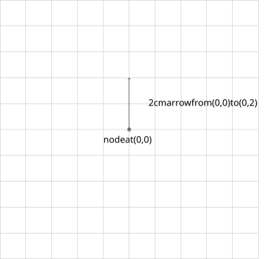

What we are building to:
TikZ is a front-end package that relies on the PGF math engine to render TeX diagrams. Researchers often use TikZ in publications because it precisely organizes diagram elements without explicit instruction. This abstraction produces a rather large collection of features. We will extensively discuss a small subset of these knobs and dials as they pertain to one type of visualization: the block diagram.

A block diagram consists mostly of stylized \node tags organized
on slightly more abstract grid system. TikZ uses a 1cm-unit coordinate system
to place and navigate between items. Often times, such an item is referred to
by a \node tag, which by itself does not render anything, but can
be styled into almost any shape. \node's allow for many
modifications, as seen in the below example.

\begin{tikzpicture}
\draw[step=1cm,gray,very thin] (-5,5) grid (5,5);
\filldraw [gray] (0,0) circle (2pt);
\node[label={south:node at (0,0)}] (origin) at (0,0) {};
\node[label={east:2cm arrow from (0,0) to (0,2)}]
(f_step) at (0.5,1) {};
\draw[->] (origin) -> (0,2);
\end{tikzpicture}
We first render a 5x5 grid with 1cm steps. Every element, whether it is
\draw or \node, is plotted on TikZ's grid, we get
a grid at (0,0) and since we choose 1cm ticks, the grid overlaps entirely with
the grid TikZ is using in its calculations (Note, this generated grid is not
the grid TikZ is using; it's only rendered this way to illustrate a point). On
the second line, we specify the location of a point using the (0,0) coordinate
system. We then specify a \node element, which by itself does
not display anything, rather it serves as a pointer that we can style with
different elements (i.e. green rectangles or blue squares). Here we anchor a
piece of text at the bottom of the node using the label tag.
Notice how we never had to specify the relative placement of the text. We can
also alias nodes with meaningful names, such as origin, which
makes it easier to refer to them when need their position. Nodes can also be
used to strategically add text to a diagram without interrupting the visuals.
Using nodes and the grid, we can begin to outline how to build the diagram:
This process is likely to be very tedious and could probably be streamlined
using for loops, which TikZ provides, and a way to predefine the
style of frequently used elements. We define styles for nodes in the so-called
preamble of a TikZ 'picture':
\begin{tikzpicture} [
squares/.style 2 args={
rectangle split,
rectangle split horizontal,
draw=#2,
rectangle split parts=#1,
fill=#2!20,
outer sep=1mm},
cell/.style{
align=center,
rectangle,
rounded corners=5mm,
draw=green,
fill=green!20,
inner sep=5mm,
outer sep=1mm}]
Armed with the ability to predefine node styles and loops, we can now create a final create a detailed outline of this diagram: